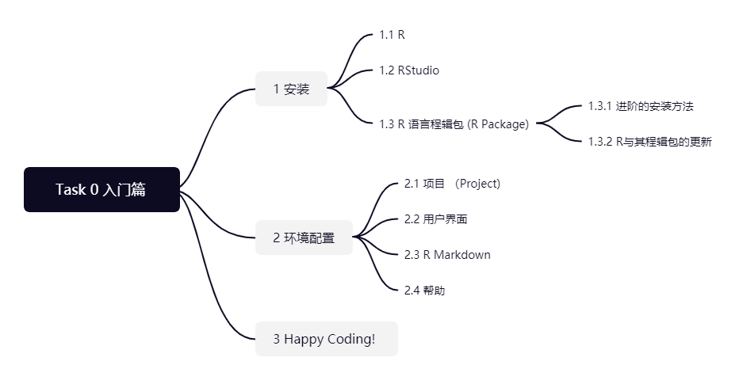
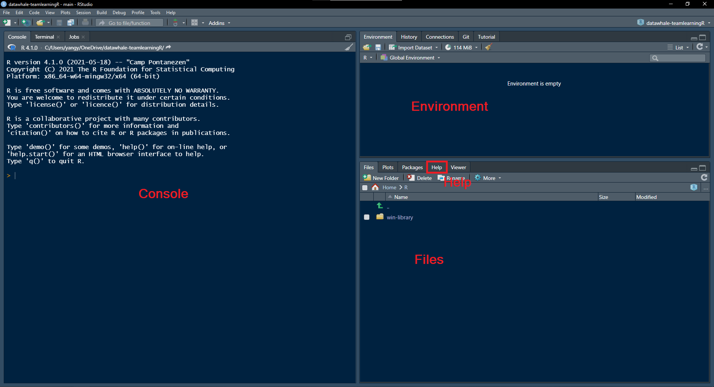

熟悉规则与R语言入门

0.1 安装
0.1.1 R
- R 语言是一门用于统计计算与绘图的编程语言和开源软件(The R Foundation)。
- R 语言是当今应用最多的统计软件之一。
- 截止到这份文档编写时，在 CRAN (the Comprehensive R Archive Network) 上总共发行了17955个R语言程辑包。
- 除了 CRAN 以外，R 语言的程辑包作者也在其他线上代码托管与研发协作平台发布了数不尽的作品。这样的平台包括 GitHub、GitLab、Gitee 等。
你可以从 CRAN 的网站上下载 R：https://cloud.r-project.org/。 你也可以在这里选择任意一个镜像网站来下载 R.
0.1.2 RStudio
RStudio 是针对 R 语言设计的集成开发环境。如果没有 RStudio 的话，R 本身只提供一个简单的文本编辑器。如果把R语言本身比喻成飞机的话，那么 RStudio 便是飞机场：你不需要它就可以飞，但是有了它会极大增加效率。它包括一个控制台、语法突出显示的编辑器、直接执行代码的支持，以及用于绘图、历史记录、调试和工作区管理的工具。
你可以从其官网下载开源版本：https://rstudio.com/products/rstudio/
在本文档中，我们会介绍 RStudio 的用户界面和部分功能，帮助你尽快上手使用 RStudio 的数据分析。
0.1.3 R语言程辑包（R Package）
R 语言程辑包是 R 语言必不可少的部分。R语言能有他今天在统计学里的位置正是归功于其程辑包在统计计算方面的发展。一个程辑包为用户提供函数（function）、数据（data）或者插件（addins）。除了 R 本身自带的基础程辑包（base、utils、stats等）以外，你还可以用以下代码来从 CRAN 上下载并安装额外的程辑包：
install.packages("tidyverse")我们将会在这次组队学习中多次用到tidyverse。它其实是一系列程辑包的组合，主要提供数据清洗与处理的工具。
0.1.3.1 进阶的安装方法
当你应用 R 语言的能力到一定阶段之后，你会发现自己需要安装不在 CRAN 上发布的程辑包，或者你需要最新版本的程辑包（ CRAN 上的包为了保证代码的可靠性，发布前需要经过一系列的检查与测试，这就导致 CRAN 上的版本往往不是最新的开发版本）。以安装 GitHub 上发布的程辑包为例，你可以使用以下代码：
# 安装 remotes 包
install.packages("remotes")
# 使用 remotes 从 GitHub 上安装 username 名下的 repo 包
remotes::install_github("username/repo")我们需要先安装 remotes 包，并使用其中的 install_github 函数来完成操作。注意这里是从源代码安装，在本地编译。Windows 用户需要使用 Rtools 作为背后的编译工具。关于 Rtools 的安装信息见 https://cran.r-project.org/bin/windows/Rtools/
0.1.3.2 R与其程辑包的更新
在本文档编写之时，R 语言已更新到版本R version 4.1.0 (2021-05-18)。当新的版本发布时，你可以使用 installr 包中的 installr 函数来完成R的更新（你当然也可以手动下载更新，如果不嫌麻烦的话）。代码如下：
# 安装 installr 包
install.packages(installr)
# 更新 R
installr::installr()根据对话窗口中的提示完成整个安装过程即可。
你也可以使用以下代码来更新R的程辑包：
# 手动确认是否将各个更新到最新版本，或者
update.packages()
# 更新所有包到最新版本
update.packages(ask = FALSE)0.2 环境配置
0.2.1 项目（Project）
在RStudio中一个项目（Project）本质上是一个把项目相关的文件储存在一个地方的文件夹。如果使用项目相关的功能的话，你不需要担心使用的文件是否在当前的工作目录（Working Directory）。 项目功能提供了一个将不同目的的文件分隔开的方式，同时自动保存上次相应的工作进度。
练习
为这次组队学习建立一个新的项目。
每次进行组队学习的时候，不要忘记去打开这个项目。在结束工作退出R，或者切换到另一个项目的时候，为了下次打开 RStudio 的时候有一个干净的工作环境，建议不去保存“工作空间镜像” （Workspace image，即在当前进程中加载的数据、函数）。
创建新的项目，可以在下拉菜单 File （或者RStudio界面的右上角）找到 New Project 选项。在弹出的对话框中，如果你想创建一个新的文件夹作为项目文件夹，选择 New Directory ；如果你想用一个已经存在的文件夹作为项目文件夹，选择 Existing Directory 。
RStudio 界面右上角的项目设置1
0.2.2 用户界面
接下来让我们关注一下 RStudio 用户界面里的各种面板和标签。在这一部分有四个基础面板值得注意。

- Console 控制台位于界面左侧。你可以在这里运行命令、浏览输出结果。
- Environment 位于界面右上方。环境面板会总结出当前加载的数据、定义的函数等。现在在你看来可能是空的，因为我们还没有做任何事情。
- Files 位于界面右下方。文件面板展示当前文件夹的信息。
- Help 帮助面板也位于界面右下方。在这里你可以找到相应数据或者函数的帮助信息。
0.2.3 R Markdown
你可以控制台（Concole）直接运行命令，但是这样跑出来的指令不会被保存下来。一般来说，我们更建议将命令写在叫做 R script 的脚本中，或者写在一个叫做 R Markdown 的文件中。
练习
创建一个脚本 R script.
- File >> New File >> R Script
练习
创建一个 R Markdown 文件。
- File >> New File >> R Markdown..
在脚本或者 R Markdown 的界面中，界面上方可以找到一个运行所有代码的按键。
一个 R Markdown 文件是一个可以将代码与 markdown 标准文本（一种纯文本的格式语法）结合在一起的文本文档。使用 R Markdown 文件可以很容易地生成 pdf 文件或者 html 文件，其中不止包含了你的文本，还有代码以及运行代码所生成的结果。点击界面上方的 Knit 按键2即可。再也不需要复制粘贴、屏幕截图输出结果到 Word 了。R Markdown 文档的一个主要优势是可复现。只要有了同样的代码和数据，你可以获得与其他人一模一样的结果，只要生成文档就可以了。
在 R Markdown 文件里写代码，需要使用特定的代码块（code chunks）来告诉 R Markdown 这部分是需要运行的代码而不只是文本。3
```{r}
# 在这里写你的代码
# 使用三个反引号和 {r} 起始，三个反引号结束来构建代码块
# 在代码块里使用井号 # 写评论（纯文本）
```0.2.4 帮助
R 能够发展到其今天的地位，很大的一个因素是他提供了相对详细的帮助文档，对初学者相对友好。一个相对完整的 R 包最低标准便是有函数的帮助文档。需要查看一个具体函数或者数据的帮助时可以用 ?fun（等同于 help(fun)），该函数 fun 的帮助文档便会出现在之前提到过的帮助面板里。这个是已经知道需要什么函数了之后查找具体函数的用法的方式，如果你不记得具体的函数名字，可以使用两个问号加关键字来搜索：??keyword。
其次R包会有一个或多个 vignette。vignette 文档的目的主要是当使用者不知道用什么函数，对这个包不了解的时候提供一份入门简介一样的东西，一般会对常用的函数做出说明和演示，以及一些理论的阐述。这个包如果是哪一篇论文的副产品，vignette 甚至有可能是这篇论文。根据包的大小不同，vignette 的数量也不一样。如果是针对于一个问题写出的精炼的小包的话会只有一个 vignette 。如果包的用途比较广泛或者作者想说的话比较多，会针对每个问题有一个单独的 vignette。浏览所有已安装的 vignette 用 browseVignettes() ，查看具体包的用browseVignettes("packagename")。以上两个是通过 CRAN 发行的包的标配。
如果这个包没有在 CRAN 上发行，只在 GitHub 上，或者 GitHub 上有开发版本的话，一般会有一个 README.md 的文档。这个文档相对于 vignette 来说更加简短，一般都只写明如何安装，以及最主要的命令的演示，没有太多的说明。文档最后有可能会说明这个包用的是什么许可证。如果有这么一个文件的话，就可以很快速的知道这个包最主要的命令是什么。这个文档就需要到相对应的R包的资源库搜索了。
## 总结
# 查看具体函数的帮助文档
?fun
help(fun)
# 在帮助文档中搜索关键词
??keyword
# 浏览所有已安装的vignette
browseVignettes()
# 查看具体包的vignette
browseVignettes("packagename")0.3 Happy Coding!
这次的R语言数据分析组队学习的入门篇便到这里了。接下里请移步组队学习的正篇第一部分：数据结构与数据集。
玩得开心！
关于Datawhale
Datawhale 是一个专注于数据科学与AI领域的开源组织，汇集了众多领域院校和知名企业的优秀学习者，聚合了一群有开源精神和探索精神的团队成员。Datawhale 以“for the learner，和学习者一起成长”为愿景，鼓励真实地展现自我、开放包容、互信互助、敢于试错和勇于担当。同时 Datawhale 用开源的理念去探索开源内容、开源学习和开源方案，赋能人才培养，助力人才成长，建立起人与人，人与知识，人与企业和人与未来的联结。 本次数据挖掘路径学习，专题知识将在天池分享，详情可关注 Datawhale：